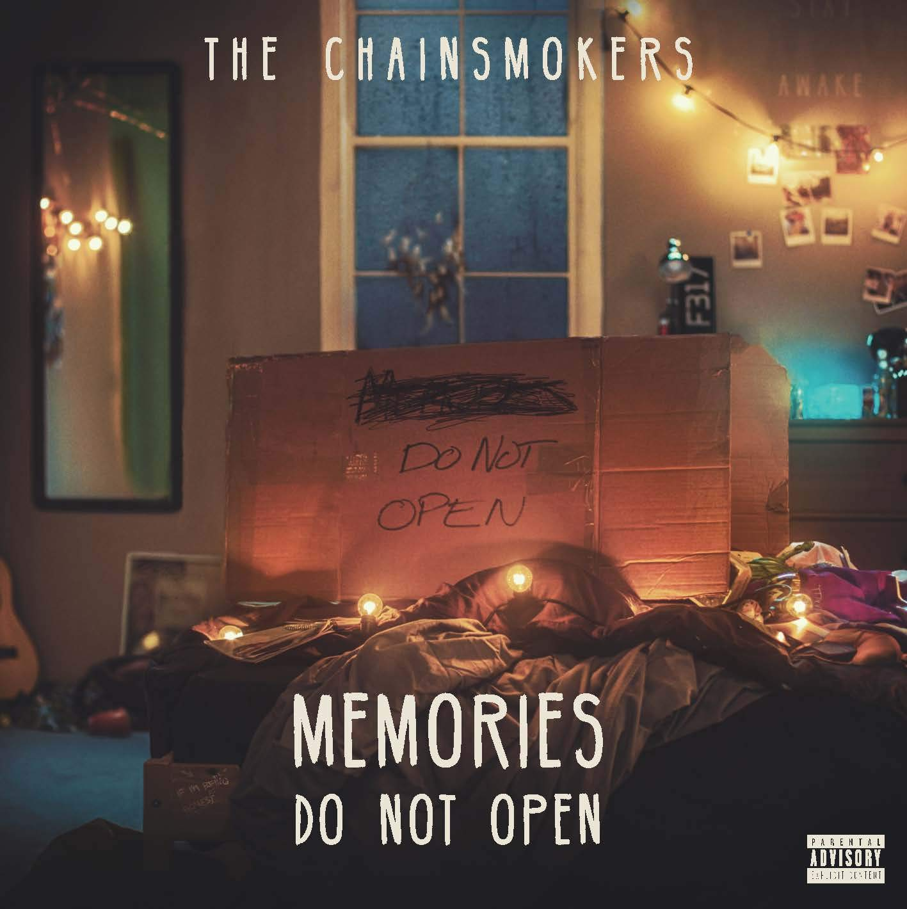

Memories Do Not Open es el album debut de estudio de The Chainsmokers. Contiene colaboraciones con Coldplay, Florida Georgia Line y Emily Warren, entre otros. Es un album que mezcla el pop con el house, con drops pegadizos y contenido lírico reflexivo. Sin duda, una muy buena forma de empezar una carrera con este disco que cuenta con 12 canciones. Fue lanzado el 7 de abril de 2017 mediante Disruptor Records.
Sick Boy es el segundo album de estudio de The Chainsmokers. Es un disco más oscuro, en donde ponen a prueba sonidos que nunca antes habiamos escuchado venir de ellos. Sin duda es otro nivel en cuanto su música se refiere. Sick Boy fue un disco progresvio, es decir, consta de 10 canciones que fueron lanzadas mensualmente. Así, el disco se completó en diciembre. Fue lanzado gracias a la discográfica Disruptor.
World War Joy es el tercer album de estudio de The Chainsmokers. Es un disco más creativo en donde podemos escuchar canciones innovadoras sin drop. Esto es algo raro viniendo de un grupo de electrónica pero no necesariamente tiene que ser malo. Podemos decir que este es el disco que más colaboraciones tiene, por ejemplo Illenium, Kygo, Ty Dolla $ign, 5SOS, entre otros. Como Sick Boy, ha sido un disco de 10 canciones lanzadas mensualmente. Gracias a Disruptor Records, este disco ha sido posible.